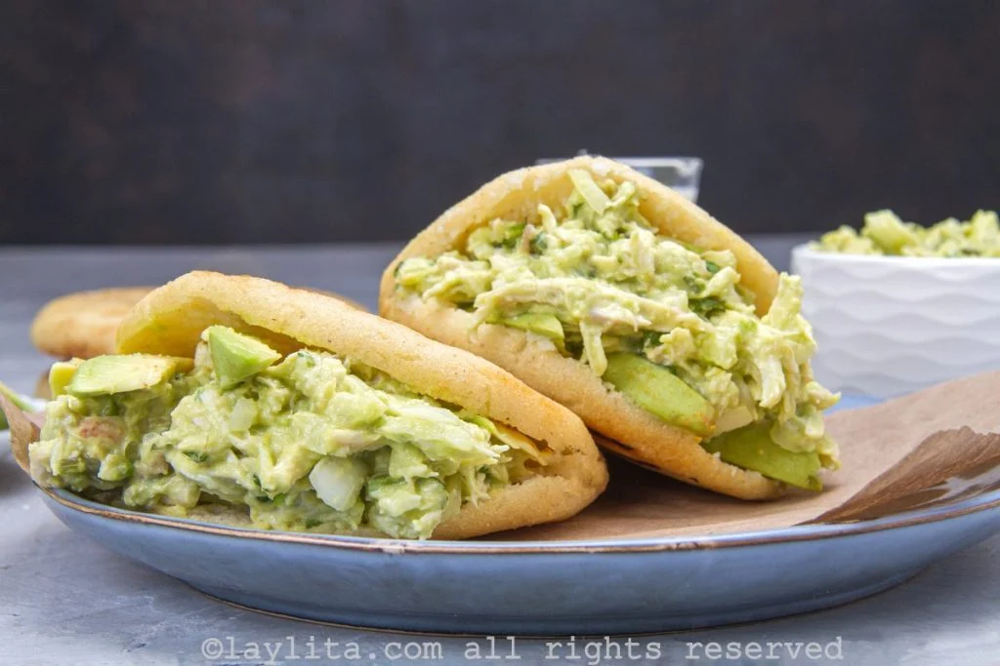

Reina Pepiada

Reina Pepiada - La icónica arepa
La reina pepiada es la arepa más famosa de Venezuela, sin lugar a dudas. Es un tipo de arepa asada que se rellena
con
una mezcla de pollo desmechado, mayonesa, aguacate majado y en rodajas, cilantro, y especias.
El maestro de la cocina Armando Scannone, nos cuenta en su libro rojo “A la manera de Caracas”, que el matrimonio
entre la arepa, el pollo asado y el aguacate es magnífica. No podría existir mejor definición, porque la reina
pepiada es exquisita, desde el principio al fin. Tiene una textura, cremosidad y frescura que no la tiene ninguna
otra arepa.
Esta receta significa mucho para los venezolanos, por la historia de sus creadores y lo que significa para los
nacidos en estas tierras caribeñas. Sería para mi imposible escribir este post, sin difundir la hermosa historia de
sus creadores y honrar a todos con la receta de uno de los grandes de la cocina venezolana, el Chef Víctor Moreno.
Ingredientes para la mejor Reina Pepiada.
- Para las arepas:
- 2 tazas de harina de maíz precocida 290 g.
- 2 ¼ de tazas de agua tibia 510 ml
- 1 cucharadita de sal
- 2 cucharadas de aceite
- Para el relleno “La Reina Pepiada” de pollo y aguacate:
- 1 pechuga de pollo asada desmechada, 300 g.
- 2 ramitas de cilantro
- 1 diente de ajo pequeño
- cebolla mediana 80 g.
- aguacate maduro 300 g.
- 3 cucharadas de mayonesa
- 1 cucharada de aceite de oliva
- 1 cucharada de limón
- Sal al gusto
Preparación
- Para las arepas:
- Coloque el agua tibia en un bol de mezclas. Luego agregue la sal, y una cucharada de aceite, remueva. Añada la
harina revolviendo constantemente con una cuchara. Amase hasta obtener una consistencia suave y agradable, sin
grumos. La masa se debe despegar fácilmente del tazón.
- Divida la masa en seis bolas del mismo tamaño y forme las arepas aplanándolas entre sus manos. Distribuya la
cucharada de aceite restante sobre la superficie de un sartén.
- Encienda la estufa a fuego medio alto, y coloque las arepas a cocinar tapadas, con suficiente separación entre sí
(para poder voltearlas con facilidad). Cuando hayan pasado los primeros cinco minutos, voltéelas y cocínelas tapadas
otros cinco minutos del lado contrario. Retírelas y déjelas reposando.
- Para el relleno reina pepiada:
- Mientras las arepas se cocinan. Pele el aguacate, reserve al menos 25% del mismo para servir cortado en rodajas
dentro de las arepas, y triture el resto. Corte la otra parte del aguacate en rodajas finas. Para evitar que el
aguacate se ponga negro, puede rociar con algunas gotas de limón.
- Corte la cebolla y el cilantro, finamente. Triture el diente de ajo. Coloque los aliños en un bol y mézclelo con el
aceite de oliva, el jugo de limón, la sal y la mayonesa. Vierta el aguacate triturado al bol con la mayonesa y
revuelva hasta que se forme una pasta homogénea.
- Agregue el pollo desmechado. Con una cuchara de madera mézclelo todo. Pruebe y rectifique sal en caso de ser
necesario. Con un cuchillo afilado, abra las arepas, retire el exceso de masa, y rellene a su gusto. Recuerde dejar
un poco de espacio para colocar algunas rodajas de aguacate.
Credit where it is due Recetas de Laylita.